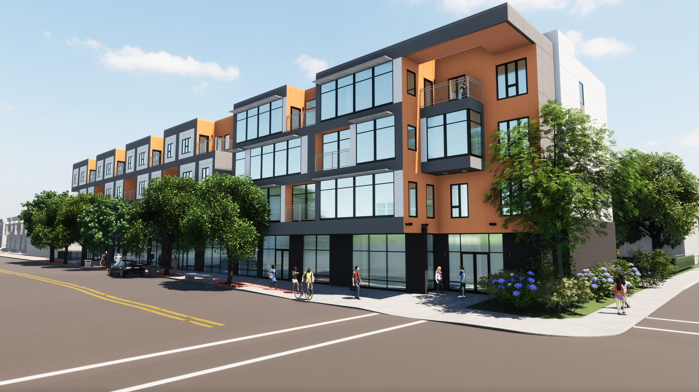
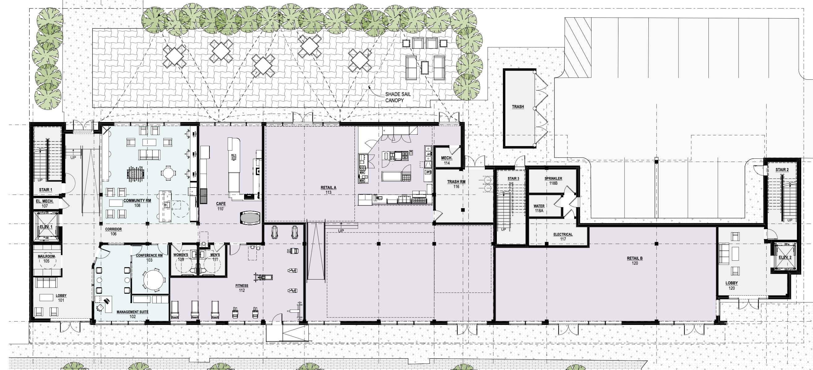
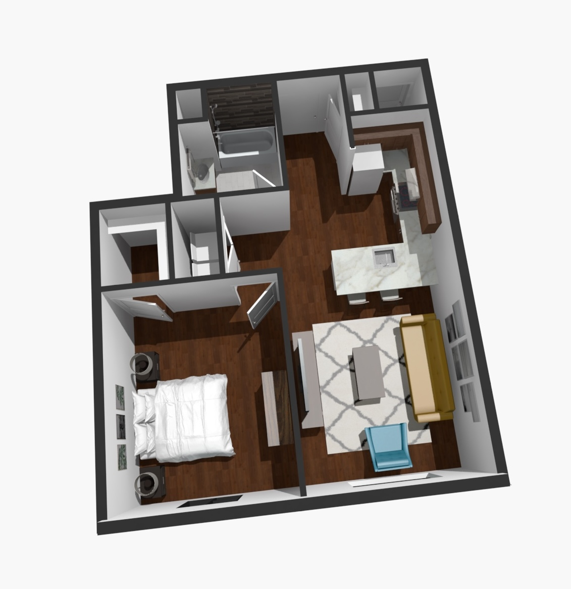
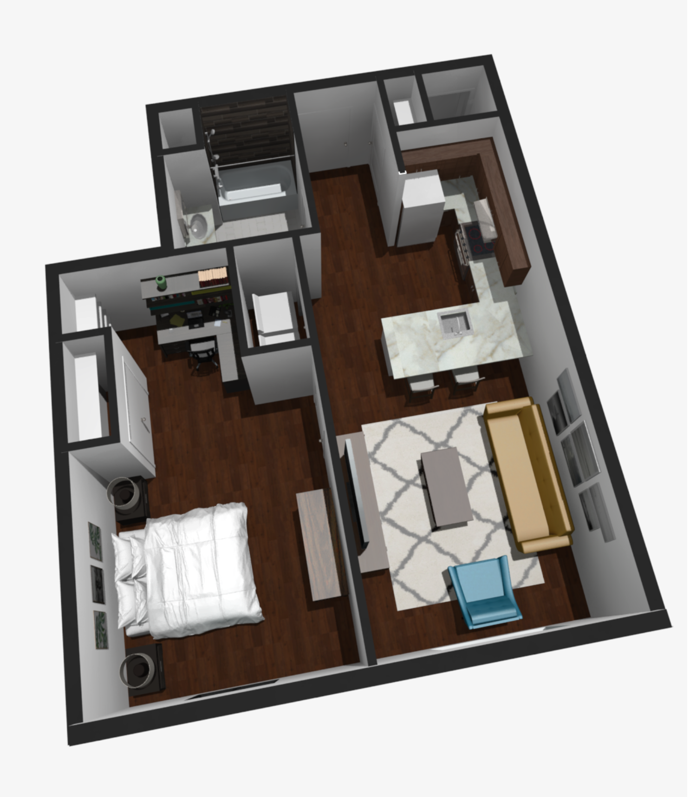
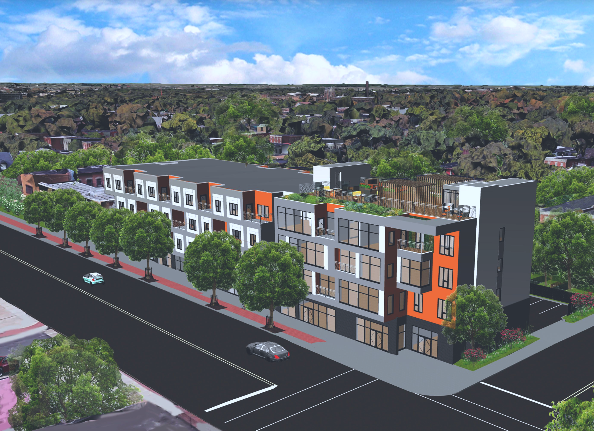
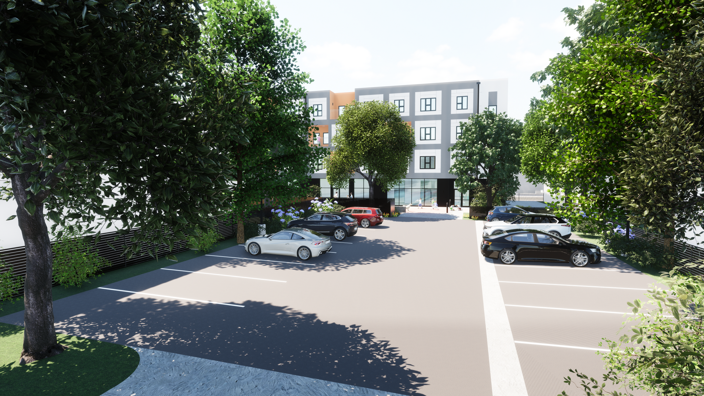
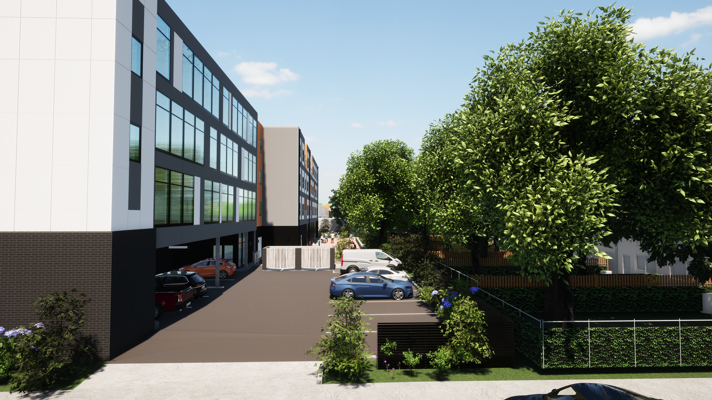

Parkside
Parkside Place has received preliminary site plan approval for 32 mixed-income multifamily housing units, as well as 26,000 sf commercial space adjacent to Our Lady of Lourdes Hospital on Haddon Avenue.
Project Overview
Mixed-income housing developments often treat affordability as a concession rather than a design opportunity. Parkside Place set out to challenge that assumption. Located on Haddon Avenue in Camden, New Jersey, adjacent to Our Lady of Lourdes Hospital, the project called for 32 multifamily housing units alongside 26,000 square feet of commercial space — serving a community that needed both stable housing and access to healthcare resources.
The brief required balancing market-rate and affordable units within the same building, with four units designated as supportive housing for individuals and families working toward more stable lives. Service partners including the Center for Family Services and Virtua Hospital would provide healthcare and social support on site, making the building function as more than just housing.
The design challenge was to create a building where every resident — regardless of income level — had access to the same quality of space, amenities, and community. A shared fitness center and wellness facilities, a green roof, and certifications including Energy Star and Enterprise Green Communities were woven into the project from the start, not added as afterthoughts.
First Floor Plan
The ground floor was designed as the social and civic heart of the building. Rather than treating the street level as purely residential, the program places community-facing uses at grade — a fitness center, café, community room, and management office serve residents of the apartments above while activating the street for the surrounding neighborhood.
Two retail spaces along the Haddon Avenue frontage create an economic connection to the broader community and reinforce the building's relationship to the hospital district. A patio with outdoor seating extends the café and community room onto the street, giving residents a shared outdoor gathering space and softening the transition between building and sidewalk.

Design Solution
Beyond the ground floor program, the residential units above were also rethought to reflect how people live today. The pandemic fundamentally changed how people use their homes. What was once a one-bedroom unit designed purely for living became inadequate overnight as remote work moved in permanently.
The design response was straightforward: carve out dedicated space for work without sacrificing the quality of the living area. The unit was reconfigured to include a home office, giving residents a defined boundary between work and rest. The before and after plans below show how the same footprint was rethought to accommodate a new way of living.


Left: original one-bedroom unit pre-pandemic. Right: reconfigured unit with dedicated home office for remote work.
Renderings



Reflection
Parkside Place taught me that budget constraints do not have to define the quality of a building. Working within affordable housing standards and state tax credit requirements pushed me to be more deliberate about every material and construction decision. The constraints were real, but they sharpened the design thinking rather than limiting it.
What stayed with me most was the understanding that good design is not reserved for those who can afford premium finishes. A well-designed building that meets affordable housing standards can still be beautiful, functional, and dignified for the families who live there. That belief shapes how I think about design work today, regardless of the medium.